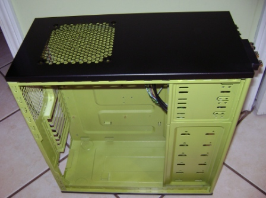
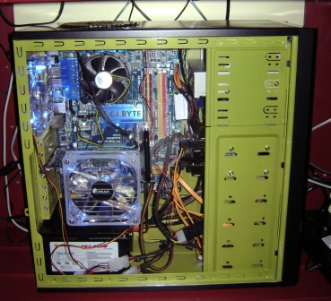
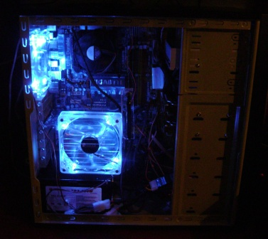

Atlanta Clojure Group
Leafhopper's Blog
- 14 Mar 2009 » Graphics Card
- 10 Mar 2009 » Pictures
  
- 6 Mar 2009 » System up and running
- installed Windows Server 2008 64bit.
- Waiting on final order, before I post pictures
- 2 Mar 2009 » Assembly Notes
- I missed a power plug on the mobo that was specifically for the cpu, computer is dead w/out that.
- I installed all 4 ram sticks, and one was bad, computer is dead if that happens.
- when first loading the bios, use 1 stick of ram, and as little else as possible to reduce errors.
- crucial.com has great customer service and sent me a ups label for the return, and told me to bubble wrap the sticks, since I had thrown out the plastic cases.
- this mobo did not have a vga connection. a first for me.
- the power supply unit only had 2 sata plugs. I have to buy converters for the rest. Next time I would get one w/ more sata plugs.
- had to buy a dvd drive, and an IDE dvd drive fits better with the cables/plugs layout than a SATA dvd drive with my setup.
- 28 Feb 2009 » Case
- LOVE THIS CASE
- Power supply sits on the floor, leaving ample room to navigate the motherboard. natural to have the weight at the bottom.
- easy access, comes with lots of extra screws, especially the large thumb screws.
- 28 Feb 2009 » Painting Notes
- use blue painter's tape and waxed paper to cover the areas that you do not want to paint.
- I decided not to paint the inside of the 5.25" bays because there were some wires that needed to be taped off in that area.
- fill screw holes with toothpcks
- when spray painting the case, only do one side at a time, making sure the side is flat to the ground so that gravity won't create any drips if you spray too heavy.
- Plexiglass:
- I got the thinner plexiglass (1/8"), worked very well fitting into the edge grooves.
- A co-worked helped to drill the holes for the fan and also a handle. The handle area cracked, and we put in a reinforcement piece.
- If you use the same case, the plexiglass cut was a 16" and 5/8" square. However, I would go a bit short (1/8"-1/4")on one side to not make it so tight.
- Got the plexiglass at Lowes and they cut it for me, perfectly.
- I used less than one can of metal primer (2 coats)
- needed 2 cans of the color spray paint
- painting the fan vents on the case leaked the color, and I went back to spray a black touch up coat on the flip side.
- it took me about 8 days. I believe in ample drying time between coats.
- All in all I am extremely pleased with how it turned out.
- 24 Feb 2009 » The last of the ordered parts arrived today. I will still need a video and sound card, and eventually a decent network adaptor card. But for now, I can get a functioning machine. Will finish up the painting and see about replacing the side panel with plexiglass this weekend. I have no intention of cutting the side panel, so if plexiglass doesn't secure nicely as a replacement, then the lime color will be a secret.
- 22 Feb 2009 » Took apart, (blue) taped and primed the interior of the case.
- 18 Feb 2009 » Watched this and decided to paint the interior of my case lime green.
- 18 Feb 2009 » Parts
- 16 Feb 2009 » Overwhelmed with building my own, gave the T100 another try.
The Dell propriety boot sector was loaded when I tried to install the OS. This confirmed my decision to return the T100.
- 13 Feb 2009 » T100 arrived. There are no PCIe x16 ports on the mobo (only x1, x4 and x8 which are fairly worthless slots).
Decided to return T100 and build my own. Off the shelf servers are not made to accommodate video or sound. Also a server quality machine is meant to be stored in a noisy server room and no effort is made to make it a quiet system. A custom build will hopefully solve these issues so I can run it in a home office.
- 07 Feb 2009 » Ordered a Dell PowerEdge T100.